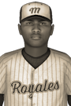

|
|
|  | EL Announces Outstanding Player Award Saturday, September 24th, 1927 The manager of the Trois-Rivieres Royales said he thinks William Byrd is only going to get better as he gets older. He may only be 19, but it will be hard to top the right fielder's 1927 campaign, as he has been named the winner of the Eastern League Most Valuable Player Award. His winning campaign featured a .365 batting average and a .448 on-base percentage this year. In 81 games he piled up 112 hits, 27 doubles, 4 triples, 18 home runs, 88 RBIs and 76 runs scored. He received 8 first place votes, as a unanimous winner. Orestes González of the Hamilton Blue Sox finished second in voting, while Dominic Grigg of the Trois-Rivieres Royales finished third. Player - Team - First Place - Total Points William Byrd - Trois-Rivieres Royales - 8 - 112 Orestes González - Hamilton Blue Sox - 0 - 50 Dominic Grigg - Trois-Rivieres Royales - 0 - 39 Sam Siemann - Harrisburg Robins - 0 - 36 Bentley Lundeen - Harrisburg Robins - 0 - 34 Bunnawat Phomee - Trois-Rivieres Royales - 0 - 23 Patrick Malles - Pittsburgh Liberty - 0 - 22 Carlton Towers - Albany Rebels - 0 - 22 Jacob McGowan - Pittsburgh Liberty - 0 - 20 Sidney Boyer - Providence Redcoats - 0 - 19 Aaron Jones - Trois-Rivieres Royales - 0 - 17 Arthit Kurata - London Indians - 0 - 16 Andres Green - Pittsburgh Liberty - 0 - 13 Sakunchai Landis - London Indians - 0 - 11 Takdanai Kilmon - Hamilton Blue Sox - 0 - 10 Chairat Lookjan - Sherbrooke Nordiques - 0 - 9 Andy Carper - Providence Redcoats - 0 - 6 Dennis Balderas - Trois-Rivieres Royales - 0 - 4 Yvan Boulanger - Albany Rebels - 0 - 4 J.R. Legendre - Providence Redcoats - 0 - 2 Nophand Poltham - Sherbrooke Nordiques - 0 - 2 Bill Dougherty - Providence Redcoats - 0 - 1 |   |